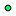

<!doctype html>
<html lang="en">
    <head>
        <meta charset="utf-8">
        <meta http-equiv="X-UA-Compatible" content="IE=edge">
        <meta name="viewport" content="initial-scale=1,user-scalable=no,maximum-scale=1,width=device-width">
        <meta name="mobile-web-app-capable" content="yes">
        <meta name="apple-mobile-web-app-capable" content="yes">
        <link rel="stylesheet" href="css/leaflet.css" />
        <link rel="stylesheet" type="text/css" href="css/qgis2web.css">
        <link rel="stylesheet" href="css/label.css" />
        <link rel="stylesheet" href="css/MarkerCluster.css" />
        <link rel="stylesheet" href="css/MarkerCluster.Default.css" />
        <link rel="stylesheet" href="css/leaflet.draw.css" />
        <link rel="stylesheet" href="css/leaflet.measurecontrol.css" />
        <script src="js/leaflet.js"></script>
        <script src="js/OSMBuildings-Leaflet.js"></script>
        <script src="js/leaflet-hash.js"></script>
        <script src="js/label.js"></script>
        <script src="js/Autolinker.min.js"></script>
        <script src="js/leaflet.draw.js"></script>
        <script src="js/leaflet.measurecontrol.js"></script>
        <script src="js/leaflet.markercluster.js"></script>
        <style>
        html, body, #map {
            width: 100%;
            height: 100%;
            padding: 0;
            margin: 0;
        }
        </style>
        <title></title>
    </head>
    <body>
        <div id="map">
        </div>
        <script src="data/json_sanfranciscosupervisordistricts0.js"></script>
        <script src="data/json_SQLQuery1.js"></script>
        <script src="data/json_mobilefoodpermitmap2.js"></script>
        <script>
        var highlightLayer;
        function highlightFeature(e) {
            highlightLayer = e.target;
            highlightLayer.openPopup();
        }
        L.ImageOverlay.include({
            getBounds: function () {
                return this._bounds;
            }
        });
        var map = L.map('map', {
            measureControl:true,
            zoomControl:true, maxZoom:28, minZoom:1
        }).fitBounds([[37.701119375,-122.550465264],[37.8356296255,-122.292399737]]);
        var hash = new L.Hash(map);
        map.attributionControl.addAttribution('<a href="https://github.com/tomchadwin/qgis2web" target="_blank">qgis2web</a>');
        var feature_group = new L.featureGroup([]);
        var bounds_group = new L.featureGroup([]);
        var raster_group = new L.LayerGroup([]);
        var basemap0 = L.tileLayer('http://a.tile.stamen.com/terrain/{z}/{x}/{y}.png', {
            attribution: 'Map tiles by <a href="http://stamen.com">Stamen Design</a>,<a href="http://creativecommons.org/licenses/by/3.0">CC BY 3.0</a> &mdash;Map data: &copy; <a href="http://openstreetmap.org">OpenStreetMap</a>contributors,<a href="http://creativecommons.org/licenses/by-sa/2.0/">CC-BY-SA</a>',
            maxZoom: 28
        });
        basemap0.addTo(map);
        var layerOrder = new Array();
        function stackLayers() {
            for (index = 0; index < layerOrder.length; index++) {
                map.removeLayer(layerOrder[index]);
                map.addLayer(layerOrder[index]);
            }
        }
        function restackLayers() {
            for (index = 0; index < layerOrder.length; index++) {
                layerOrder[index].bringToFront();
            }
        }
        layerControl = L.control.layers({},{},{collapsed:false});
        function pop_sanfranciscosupervisordistricts0(feature, layer) {
            layer.on({
                mouseout: function(e) {
                    if (typeof layer.closePopup == 'function') {
                        layer.closePopup();
                    } else {
                        layer.eachLayer(function(feature){
                            feature.closePopup()
                        });
                    }
                },
                mouseover: highlightFeature,
            });
        }

        function doStylesanfranciscosupervisordistricts0(feature) {
            return {
                weight: 1.66,
                color: '#f681dd',
                fillColor: '#000000',
                dashArray: '',
                lineCap: 'square',
                lineJoin: 'bevel',
                opacity: 1.0,
                fillOpacity: 0.0
            };
        }
        var json_sanfranciscosupervisordistricts0JSON = new L.geoJson(json_sanfranciscosupervisordistricts0, {
            onEachFeature: pop_sanfranciscosupervisordistricts0,
            style: doStylesanfranciscosupervisordistricts0
        });
        layerOrder[layerOrder.length] = json_sanfranciscosupervisordistricts0JSON;
        bounds_group.addLayer(json_sanfranciscosupervisordistricts0JSON);
        feature_group.addLayer(json_sanfranciscosupervisordistricts0JSON);
        function pop_SQLQuery1(feature, layer) {
            layer.on({
                mouseout: function(e) {
                    if (typeof layer.closePopup == 'function') {
                        layer.closePopup();
                    } else {
                        layer.eachLayer(function(feature){
                            feature.closePopup()
                        });
                    }
                },
                mouseover: highlightFeature,
            });
            var popupContent = '<table><tr><th scope="row">name</th><td>' + (feature.properties['name'] !== null ? Autolinker.link(String(feature.properties['name'])) : '') + '</td></tr></table>';
            layer.bindPopup(popupContent);
        }

        function doStyleSQLQuery1() {
            return {
                radius: 3.0,
                fillColor: '#0f63e1',
                color: '#000000',
                weight: 0.0,
                opacity: 1.0,
                dashArray: '',
                lineCap: 'butt',
                lineJoin: 'miter',
                fillOpacity: 1.0
            }
        }
        function doPointToLayerSQLQuery1(feature, latlng) {
            return L.circleMarker(latlng, doStyleSQLQuery1())
        }
        var json_SQLQuery1JSON = new L.geoJson(json_SQLQuery1, {
            onEachFeature: pop_SQLQuery1, 
            pointToLayer: doPointToLayerSQLQuery1
            });
        layerOrder[layerOrder.length] = json_SQLQuery1JSON;

        bounds_group.addLayer(json_SQLQuery1JSON);
        feature_group.addLayer(json_SQLQuery1JSON);
        function pop_mobilefoodpermitmap2(feature, layer) {
            layer.on({
                mouseout: function(e) {
                    if (typeof layer.closePopup == 'function') {
                        layer.closePopup();
                    } else {
                        layer.eachLayer(function(feature){
                            feature.closePopup()
                        });
                    }
                },
                mouseover: highlightFeature,
            });
            var popupContent = '<table><tr><th scope="row">applicant</th><td>' + (feature.properties['applicant'] !== null ? Autolinker.link(String(feature.properties['applicant'])) : '') + '</td></tr></table>';
            layer.bindPopup(popupContent);
        }

        function doStylemobilefoodpermitmap2() {
            return {
                radius: 2.0,
                fillColor: '#18f470',
                color: '#000000',
                weight: 0.0,
                opacity: 1.0,
                dashArray: '',
                lineCap: 'butt',
                lineJoin: 'miter',
                fillOpacity: 1.0
            }
        }
        function doPointToLayermobilefoodpermitmap2(feature, latlng) {
            return L.circleMarker(latlng, doStylemobilefoodpermitmap2())
        }
        var json_mobilefoodpermitmap2JSON = new L.geoJson(json_mobilefoodpermitmap2, {
            onEachFeature: pop_mobilefoodpermitmap2, 
            pointToLayer: doPointToLayermobilefoodpermitmap2
            });
        layerOrder[layerOrder.length] = json_mobilefoodpermitmap2JSON;

        bounds_group.addLayer(json_mobilefoodpermitmap2JSON);
        feature_group.addLayer(json_mobilefoodpermitmap2JSON);
        raster_group.addTo(map);
        feature_group.addTo(map);
        var baseMaps = {'Stamen Terrain': basemap0};
        L.control.layers(baseMaps,{' mobile_food_permit_map': json_mobilefoodpermitmap2JSON,' SQLQuery': json_SQLQuery1JSON,' sanfrancisco_supervisor_districts': json_sanfranciscosupervisordistricts0JSON,},{collapsed:false}).addTo(map);
        L.control.scale({options: {position: 'bottomleft', maxWidth: 100, metric: true, imperial: false, updateWhenIdle: false}}).addTo(map);
        stackLayers();
        map.on('overlayadd', restackLayers);
        </script>
    </body>
</html>
